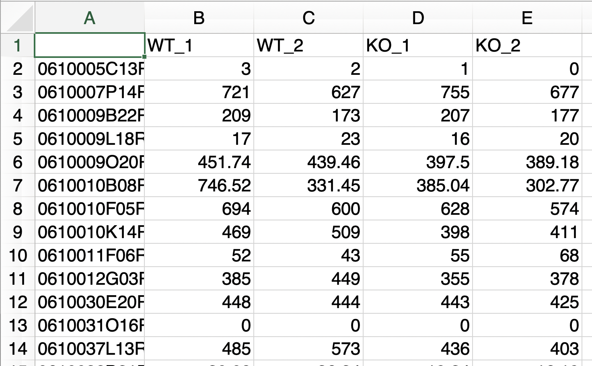
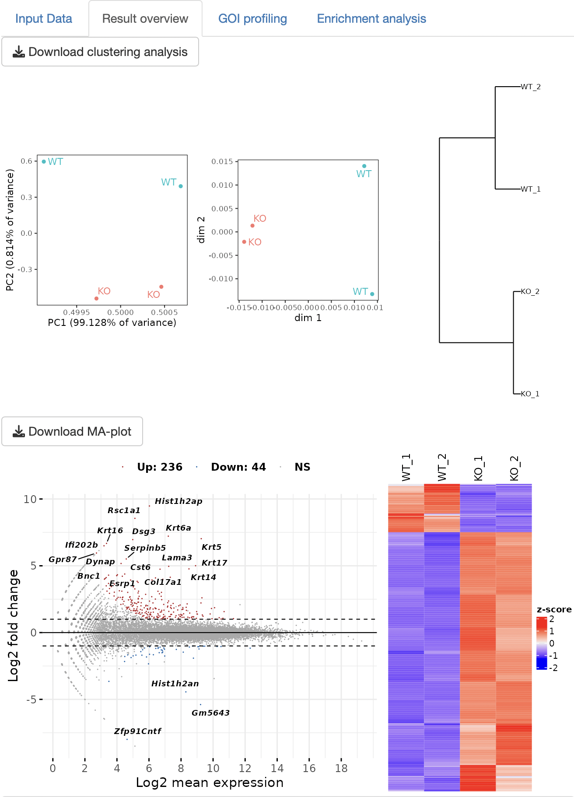
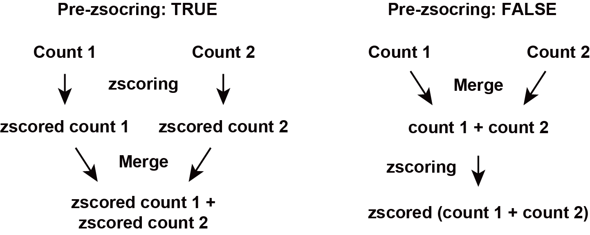

RNAseqChef manual
24/03/13 20:12

概要

News (2024/3/13)
- (2024/3/13)
アプリをアップデートしました(v1.1.1)。
これまで時間のかかった”3 conditions DEG”が高速で実行できるようになりました。 - (2024/2/20) GREINに関する情報(よくある情報)を修正しました
- (2024/1/18) ミラーサイトを用意しました(mirror 1, mirror 2)。正規のURLにアクセスできない場合にご利用ください。
- (2024/1/18)「よくある質問」を更新しました。
- (2023/12/13) 統合TVに使用方法の説明動画が掲載されました。
RNAseqChefは、RNA-seqにより得たカウントデータを自動的に解析・可視化するウェブアプリです。
単一のデータセットの解析だけでなく、複数のデータセットの結果を統合解析することも可能です。
また、RNA-seqのカウントデータからChIP-seqやATAC-seqの解析で得た遺伝子セットを抽出・解析するマルチオミクスな解析も可能です。
Publication-readyな高解像度Figure（イラストレーターで編集可能なPDFファイル）をダウンロードすることができます。
RNAseqChefは、以下の方法で使用可能です。
1. ウェブページにアクセス
2. ソースコードページのLocal
installation に記載されている方法を実行
If you need help, please create an issue on Github or contact us.
本アプリは以下のセクションにより構成されます。
Pair-wise DEG (２群間比較の遺伝子発現変動解析)
3 conditions DEG (３群間多重比較の遺伝子発現変動解析)
Multi DEG (尤度比検定による遺伝子発現変動解析)
Venn diagram (複数の遺伝子セットから共通遺伝子の抽出・複数のカウントデータを統合したヒートマップの作成)
Normalized count analysis (normalized countデータを用いたクラスタリング解析、遺伝子セットの抽出)
Enrichment viewer (遺伝子セットの機能解析)
More（その他の便利機能やReferenceなど）
アプリはメニュー、セッティングパネル、アウトプットパネルの3種類のパネルで構成されています。
各セクションはアプリ上部のメニューボタンをクリックすることで移動できます。
解析を実行するファイルは、セッティングパネルからアップロードすることができます。
解析は、アウトプットパネルのタブパネルをクリックすることで実行されます。

Input fileの共通ルール・注意点
拡張子
タブ区切りtxt file (.txt)、カンマ区切りcsv file
(.csv)、エクセルファイル (.xlsx)に対応します。
遺伝子名の重複
エクセルの自動書式機能が遺伝子名の誤変換を引き起こすケースがあります。
エクセルのバージョンによっては、ただファイルを開くだけで遺伝子名の変換・重複が起こります（March1
→ 1-Mar, Marc1 → 1-Marなど）。
RNAseqChefでは、遺伝子名の重複を含むファイルは解析できません（Enrichment
viewerを除く）。
エクセルでファイルを編集する場合は、遺伝子の誤変換が起きていないことを確認してください。
Output fileの共通ルール・注意点
データの保存
ダウンロードボタンを押すことで、テーブルデータやグラフが保存されます。
表データはタブ区切りtxt
file(.txt)、グラフはイラストレーターで編集可能なPDFファイルで保存されます。
pair-wise DEGのbatch
modeのみ、zip形式で複数のファイルが保存されます。
保存されるグラフのサイズ調整
Setting panelの「Output plot size setting for
pdf」を調整することで保存される図のサイズを変更できます。
グラフ内で隣り合う文字が重なってしまう場合やグラフの余白が大きすぎる場合にパラメーターを調整して下さい。
パラメーターの値が0の場合、デフォルトサイズで保存されます。
デフォルトサイズは、図の種類によって異なります。詳細は、アプリ内のポップアップからご覧ください。
Pair-wise DEG
２群間の比較解析を実行します。DEG（発現変動遺伝子）の同定・可視化・機能解析結果を出力します。
Setting

Input format
inputとなるraw countデータの形式は3種類あります。
下図のようにボタンを押すことで、アップロードの様式が切り替わります。

1. raw count データのみ
以下の条件を満たす場合、raw countデータのみで解析を実行できます。
- 解析対象となる２群のデータのみで構成されるファイル
- サンプル名のn数は、アンダーバー「 _ 」を用いて表記する
- アンダーバー「 _ 」は、n数の表記以外では使用しない
2. raw count データ + メタデータ
サンプル名がaccession numberである場合や余分な情報が含まれるraw
countデータである場合に使用します。
メタデータは以下の情報を含む必要があります。
- １列目は、raw countデータで使用されているサンプル名（例: accession number）
- ２列目は、対応するサンプル名 (例: Control_1)
- ３列目以降は、解析に影響しません メタデータ２列目のサンプル名は、n数表記（例：“_1”）は必須ではありません。
n数表記がない場合には、自動的にナンバリングされます（上から順に”_1”,“_2”…と割り振られます）。

3. raw count データのみ (バッチモード)
以下の条件を満たす場合、複数のraw countデータを一括処理できます。
- 解析対象となる２群のデータのみで構成されるファイル
- サンプル名のn数は、アンダーバー「 _ 」を用いて表記する
- アンダーバー「 _ 」は、n数の表記以外では使用しないバッチモードでは、Output panelに結果が表示されません。
Downloadボタンをクリックすることで、Clustering, MA_plot, DEG_result,
発現量が増加した遺伝子のカウントデータ、発現量が減少した遺伝子のカウントデータ、normalizedカウントデータ、がzip形式で出力されます。
FDR method
DEG analysis methodがDESeq2またはedgeRの場合、3種類のFDR methodが選べます。
- BH, Benjamini-Hochberg法 (default)
- Qvalue, Storey法
- IHW,
Independent Hypothesis Weighting
Species
データセットの種を選択することで以下の解析が実行されます。
- 遺伝子名がENSEMBL IDの場合、gene symbolへの変換
- エンリッチメント解析の実行Cut-off conditions
Fold change, FDR, basemeanの閾値が設定できます。
Option: normalized count input
TPMカウントなどのnormalized countデータを用いてbasemean
cut-offやボックスプロットを表示することができます。
注: raw
countデータが不要になるわけではありません。
Output
Input Data
アップロードしたraw countデータを表示します。
メタデータをアップロードした場合、メタデータとそのメタデータの情報を用いて抽出したraw
countデータも表示します。

Result overview
Principal Component Analysis (PCA)、Multi-Dimensional Scaling (MDS),
ward.D2による階層的クラスタリングの3種類のクラスタリング解析を実行します。
DEG解析の結果をMA-plotとheatmapで表示します。
表データとして、DEG解析の結果やDEGのカウントデータが出力されます。

GOI (Genes of interest) profiling
Volcano plotを表示します。
GOI
listから遺伝子を選択することで、volcano
plotで表示される点のうち、目的の遺伝子だけをラベルすることができます。
x軸、y軸のレンジはスライドバーを操作することで自由に変更できます。
また、GOI
listから選択された遺伝子のheatmapおよびboxplotが表示されます。


Volcano plot上で興味ある遺伝子をまとめて選択することも可能です。

Enrichment analysis
エンリッチメント解析によりDEGの機能を同定します。
解析に使用できる遺伝子セットは、以下の通りです。
MSigDB
hallmark gene
KEGG
Reactome
PID
(Pathway Interaction Database)
BioCarta
WikiPathways
GO (biological process, cellular
component, and molecular function)
Human phenotype ontology
DoRothEA regulon
(activator)
DoRothEA regulon
(repressor)
Transcription
factor targets
miRNA
target
注) 転写因子の予測解析はDoRothEA
regulonの使用を推奨します。
解析結果として、over-representative analysis, GSEA (gene set
enrichment analysis), gene-concept network (cnet) plotが出力されます。
解析は、ClusterProfilerに依存します。

3 conditions DEG
EBSeqによる多重比較解析を実行することで、３群間のDEGを同時に検出・可視化・機能解析結果を出力します。
注： 多重比較解析は時間がかかります（５〜１０分）。
(2024/3/13追記)
EBSeq.v2が使えるようになりました。今までの数十倍の速度でDEG解析が実行できます。EBSeq.v1も今まで通り利用できます。
Setting

Input format
3conditions DEGのinput formatや設定は、pair-wise
DEGと全く同様です。
pair-wise
DEGの説明を読んだ方は、読む必要はありません。
inputとなるraw countデータの形式は2種類あります。
1. raw count データのみ
以下の条件を満たす場合、raw countデータのみで解析を実行できます。
- 解析対象となる３群のデータのみで構成されるファイル
- サンプル名のn数は、アンダーバー「 _ 」を用いて表記する
- アンダーバー「 _ 」は、n数の表記以外では使用しない
2. raw count データ + メタデータ
サンプル名がaccession numberある場合や余分な情報が含まれるraw
countデータである場合に使用します。
メタデータは以下の情報を含む必要があります。
- １列目は、raw countデータで使用されているサンプル名（例: accession number）
- ２列目は、対応するサンプル名 (例: Control_1)
- ３列目以降は、解析に影響しません メタデータ２列目のサンプル名は、n数表記（例：“_1”）は必須ではありません。
n数表記がない場合には、自動的にナンバリングされます（上から順に”_1”,“_2”…と割り振られます）。
3. Recode.Rdata
以前3conditions DEGで解析を行なっており、“Download summary”ボタンを押すことでRecode.Rdataファイルを取得していた場合に限り、使用可能なオプションです。 Recode.Rdataファイルをアップロードすることで、時間のかかるEBSeqによるDEG解析をスキップすることができます。
EBSeq
EBSeq.v2とEBSeq.v1を切り替えることができます。 EBSeq.v2に関する詳細はこちらをご覧ください。
Species
データセットの種を選択することで以下の解析が実行されます。
- 遺伝子名がENSEMBL IDの場合、gene symbolへの変換
- Enrichment analysisの実行Cut-off conditions
Fold change, FDR, basemeanの閾値が設定できます。
Option: normalized count input
TPMカウントなどのnormalized countデータを用いてbasemean
cut-offやボックスプロットを表示することができます。
注: raw
countデータが不要になるわけではありません。
Output
Input Data
アップロードしたraw countデータを表示します。
メタデータをアップロードした場合、メタデータとそのメタデータの情報を用いて抽出したraw
countデータも表示します。

Result overview
Principal Component Analysis (PCA)、Multi-Dimensional Scaling (MDS),
ward.D2による階層的クラスタリングの3種類のクラスタリング解析を実行します。
DEG解析の結果をscatter plotとheatmapで表示します。
3条件総当たりで遺伝子発現変動を可視化することで、各条件の遺伝子発現の特徴を抽出できます。
また、DEG解析の結果やDEGのカウントデータが出力されます。


GOI (Genes of interest) profiling
GOI
listから選択された遺伝子のheatmapおよびboxplotが表示されます。


Volcano
plot上で興味ある遺伝子をまとめて選択することも可能です。
 —
—
Enrichment analysis
Enrichment analysisによりDEGの機能を同定します。
解析に使用できる遺伝子セットは、以下の通りです。
MSigDB
hallmark gene
KEGG
Reactome
PID
(Pathway Interaction Database)
BioCarta
WikiPathways
GO (biological process, cellular
component, and molecular function)
Human phenotype ontology
DoRothEA regulon
(activator)
DoRothEA regulon
(repressor)
Transcription
factor targets
miRNA
target
注) 転写因子の予測解析はDoRothEA
regulonの使用を推奨します。
解析は、over-representative analysis, gene-concept network (cnet)
plotが実行されます。
解析は、ClusterProfilerに依存します。


Multi DEG
DESeq2 LRT(Likelihood Ratio Test:
尤度比検定)を実行することで、発現変動遺伝子を検出・可視化・機能解析結果を出力します。
注： 個々の群間の検定は行いません。
Setting

Input format
inputとなるraw countデータの形式は2種類あります。
1. raw count データのみ
以下の条件を満たす場合、raw countデータのみで解析を実行できます。
- 解析対象のデータのみで構成されるファイル
- サンプル名のn数は、アンダーバー「 _ 」を用いて表記する
- アンダーバー「 _ 」は、n数の表記以外では使用しない
2. raw count データ + メタデータ
2-factorの比較・可視化をしたい場合に使用します。
メタデータは以下の情報を含む必要があります。
- １列目は、raw countデータで使用されているサンプル名
- １列目のサンプル名は、n数の情報を含む（アンダーバー「 _ 」を用いて表記する）
- ２列目は、対応するサンプルの条件1 (例: time)
- ３列目は、対応するサンプルの条件2 (例: genotype)
FDR method
3種類のFDR methodが選べます。
- BH, Benjamini-Hochberg法 (default)
- Qvalue, Storey法
- IHW,
Independent Hypothesis Weighting
Species
データセットの種を選択することで以下の解析が実行されます。
- 遺伝子名がENSEMBL IDの場合、gene symbolへの変換
- Enrichment analysisの実行Cut-off conditions
Fold change, FDR, basemeanの閾値が設定できます。
Option: normalized count input
TPMカウントなどのnormalized countデータを用いてbasemean
cut-offやボックスプロットを表示することができます。
注: raw
countデータが不要になるわけではありません。
Output
Input Data
アップロードしたraw countデータを表示します。
メタデータをアップロードした場合、メタデータとそのメタデータの情報を用いて抽出したraw
countデータも表示します。


Result overview
Principal Component Analysis (PCA)、Multi-Dimensional Scaling (MDS),
ward.D2による階層的クラスタリング、UMAP(Uniform Manifold Approximation
and Projection)の４種類のクラスタリング解析を実行します。
DEG解析の結果をheatmapで表示します。
また、DEG解析の結果やDEGのカウントデータが出力されます。
UMAPのn_neighborsは、多様体構造の局所近似で使用される近傍点の数です。
小さくすると局所構造、大きくすると大域的な構造を保持します。
サンプル数が少ない場合は、n_neighborsを小さくする必要があります。


Divisive clustering
分割型(top-down)アプローチによる階層的クラスタリングを実行します。
クラスターの数は自動的に決定されます。
それぞれのクラスターの発現パターンをボックスプロットで表示します。
遺伝子とクラスターの対応関係をテーブルデータとして出力します。
また、Enrichment
analysisにより各クラスターの遺伝子の機能を同定します。
解析に使用できる遺伝子セットは、以下の通りです。
MSigDB
hallmark gene
KEGG
Reactome
PID
(Pathway Interaction Database)
BioCarta
WikiPathways
GO (biological process, cellular
component, and molecular function)
Human phenotype ontology
DoRothEA regulon
(activator)
DoRothEA regulon
(repressor)
Transcription
factor targets
miRNA
target
注) 転写因子の予測解析はDoRothEA
regulonの使用を推奨します。
解析は、over-representative analysis, gene-concept network (cnet)
plotが実行されます。
解析は、ClusterProfilerに依存します。
Select a pair for fold change cut-offについて
選択された2群間のFold ChangeがCut-off condition(Setting
panel)の対象となります。
特定の群間でのみ大きく変化する遺伝子を抽出したい場合に有効な機能となります。
The DEG number after the filtrationについて
Cut-off後のDEGの数が表示されます。
Most significant genesについて
Cut-off後のDEGをFDRが低い順から抽出し、クラスタリング解析を実行します。
Cut-off後のDEGが多すぎる場合、サーバーメモリの都合上フリーズする恐れがあるため、解析対象の遺伝子を絞り込みます。


k-means clustering
k-means clusteringを実行します。
クラスターの数は、スライドバーを操作することで変更できます。
それぞれのクラスターの発現パターンをボックスプロットで表示します。
遺伝子とクラスターの対応関係をテーブルデータとして出力します。
また、Enrichment
analysisにより各クラスターの遺伝子の機能を同定します。
Select a pair for fold change cut-offについて
選択された2群間のFold ChangeがCut-off condition(Setting
panel)の対象となります。
特定の群間でのみ大きく変化する遺伝子を抽出したい場合に有効な機能となります。
The DEG number after the filtrationについて
Cut-off後のDEGの数が表示されます。
Most significant genesについて
Cut-off後のDEGをFDRが低い順から抽出し、クラスタリング解析を実行します。
Cut-off後のDEGが多すぎる場合、サーバーメモリの都合上フリーズする恐れがあるため、解析対象の遺伝子を絞り込みます。
Boxplotについて
“DEG_pattern_normalized_count_data”テーブルから遺伝子を選択すると、“Boxplot”にプロット結果が表示されます。


GSEA
GSEA (gene set enrichment analysis)によりDEGの機能を同定します。
解析に使用できる遺伝子セットは、以下の通りです。
MSigDB
hallmark gene
KEGG
Reactome
PID
(Pathway Interaction Database)
BioCarta
WikiPathways
GO (biological process, cellular
component, and molecular function)
Human phenotype ontology
DoRothEA regulon
(activator)
DoRothEA regulon
(repressor)
Transcription
factor targets
miRNA
target
注) 転写因子の予測解析はDoRothEA
regulonの使用を推奨します。
解析は、ClusterProfilerに依存します。

Venn diagram
複数の遺伝子リストの共通部分を抽出します。
カウントデータと組み合わせることで、共通部分のカウントデータの抽出・ヒートマップの作成ができます。
Setting

Input format
遺伝子リスト
inputとなる遺伝子リストのフォーマットは以下の通りです。
- １列目は、遺伝子名
- ２列目以降は、解析に影響しません
- 最大アップロード数は７です。
- ファイル名は、拡張子以外でピリオド「 . 」を使用しない２列目以降は解析に影響しないため、カウントデータが含まれていても問題ありません。
最大７種類の遺伝子リストの共通部分、非共通部分を可視化、リストとして出力できます。

複数のカウントデータ（統合ヒートマップの作成）
複数のカウントデータを統合して、ベン図により同定した遺伝子セットの発現を可視化します。
inputとなるカウントデータのフォーマットは以下の通りです。
- Raw countデータではなく、normalized countデータを使用
- ファイル名は、拡張子以外でピリオド「 . 」を使用しない
—
Option: pre-zscoring
pre-zscoringは、複数のカウントデータを統合する前に、zscore化します。

Output
Input gene list
アップロードした遺伝子リストから作成したベン図を表示します。
アップロードしたリストに含まれる全遺伝子に関して、ベン図のどのグループに所属するかをリストとして表示します。
データの見方について
ベン図で表示されるグループは、アップロードした遺伝子リストのファイル名を元に作成されます（具体例の場合、example1.txtとexample2.txtをアップロードしています）。
共通部分はコロン「 :
」により表記されます（具体例の場合、day0:day1:day5 =
「day0,day1,day5の共通部分」、day0:day1 =
「day0とday1のみの共通部分」、day0 =
「共通部分を除いたday0の遺伝子」となります）。


Integrated heatmap
複数のカウントデータの統合及びベン図グループの遺伝子抽出を行い、ヒートマップとして結果を出力します。
可視化するグループは「gene
list」から選択することで切り替えることができます。
統合したカウントテーブルは2種類出力されます。
integrated normalized
countはzscore化をせずに複数のカウントデータを結合した結果です。
integrated zscored normalized
countはzscore化したカウントデータです。pre-zscoringがTRUEの場合、複数のデータを結合する前にzscore化、pre-zscoringがFalseの場合、データを結合した後にzscore化されます。
「gene list」からnot
selectedを選択することで、全遺伝子を結合したカウントデータを取得することも可能です。


Enrichment analysis
エンリッチメント解析により各遺伝子グループの機能を同定します。
解析に使用できる遺伝子セットは、以下の通りです。
MSigDB
hallmark gene
KEGG
Reactome
PID
(Pathway Interaction Database)
BioCarta
WikiPathways
GO (biological process, cellular
component, and molecular function)
Human phenotype ontology
DoRothEA regulon
(activator)
DoRothEA regulon
(repressor)
Transcription
factor targets
miRNA
target
注) 転写因子の予測解析はDoRothEA
regulonの使用を推奨します。
解析は、over-representative analysis, gene-concept network (cnet)
plotが実行されます。
cnet
plotで表示するグループは、「Group」から選択することで切り替えることができます。
解析は、ClusterProfilerに依存します。


Normalized count analysis
Normalized countデータのクラスタリング解析を実行します。
オプションとして遺伝子リストをアップロードすることで、目的の遺伝子のカウントデータのみを抽出し、クラスタリング解析を実行することもできます。
また、boxplotやヒートマップにより遺伝子発現の可視化もできます。
さらに、k-means
clusteringにより類似の発現パターンを示す遺伝子グループを同定します。
Setting

Input format
pair-wise DEGや3 conditions DEGのフォーマットと同様です。
1. normalized count データのみ
以下の条件を満たす場合、raw countデータのみで解析を実行できます。
- サンプル名のn数は、アンダーバー「 _ 」を用いて表記する
- アンダーバー「 _ 」は、n数の表記以外では使用しない
2. normalized count データ + メタデータ
サンプル名がaccession numberである場合や余分な情報が含まれるraw
countデータである場合に使用します。
メタデータは以下の情報を含む必要があります。
- １列目は、normalized countデータで使用されているサンプル名（例: accession number）
- ２列目は、対応するサンプル名 (例: Control_1)
- ３列目以降は、解析に影響しません メタデータ２列目のサンプル名は、n数表記（例：“_1”）は必須ではありません。
n数表記がない場合には、自動的にナンバリングされます（上から順に”_1”,“_2”…と割り振られます）。
Species
データセットの種を選択することで以下の解析が実行されます。
- 遺伝子名がENSEMBL IDの場合、gene symbolへの変換
Filter option 1
gene
listをアップロードすることで、目的の遺伝子グループのみを抽出後、クラスタリング解析を実行します。
Filter option 2
Fold Changeとbasemeanの閾値が設定できます。
Output
Input Normalized Count Data
アップロードしたNormalized
countデータ、メタデータ、遺伝子リストを表示します。
メタデータや遺伝子リストをアップロードした場合、抽出結果のNormalized
countデータも表示します。

Clustering
Principal Component Analysis (PCA)、Multi-Dimensional Scaling (MDS),
ward.D2による階層的クラスタリング、UMAP(Uniform Manifold Approximation
and Projection)の４種類のクラスタリング解析を実行します。
UMAPのn_neighborsは、多様体構造の局所近似で使用される近傍点の数です。
小さくすると局所構造、大きくすると大域的な構造を保持します。
サンプル数が少ない場合は、n_neighborsを小さくする必要があります。


GOI (Genes of interest) profiling
GOI
listから選択された遺伝子のheatmapおよびboxplotが表示されます。
Select a pair for fold change cut-off: Fold
ChangeによるCut-offを適用したい条件のペアを選択できます。
Genes:
Select all
genesを選択した場合、Filter後の全遺伝子のヒートマップを描写します。ボックスプロットに関しては、Filter後の遺伝子の数が200遺伝子名未満の場合のみ描写されます。Genes
of interest
(GOI)から遺伝子を選択した場合、選択した遺伝子のヒートマップ上での位置が図示されます。
Customを選択した場合、Genes of interest
(GOI)から選択した遺伝子に関してのみ、ヒートマップとボックスプロットが描写されます。
statistics:条件が２群の場合は、Welch’s
t-testとWilcoxon testが選択可能です。
条件が３群以上の場合は、TukeyHSDとDunnett’s
test、Wilcoxon testが選択可能です。
200遺伝子まで一括で統計処理、有意差のマーク入りのグラフが描写できます。
PlotType:Boxplot、Barplot、Errorplotが選択可能です。


Correlation analysis
相関解析を実行します。
二つのモードがあります。
Selected pair
興味ある２つの遺伝子のcorrelation plotを描写します。
Select GOIとSelect GOI
(y_axis)からそれぞれ遺伝子を選択します。
ドットの色はColorから選択することができます。“Sample
name”を選んだ場合は群ごとに配色されます。“遺伝子名”を選択した場合は、選んだ遺伝子の発現量に応じて配色されます。青が低発現、赤が高発現を意味します。
Correlation analysisのmethodは”Spearman’s rank correlation
analysis”と”Pearson’s correlation
analysis”がStatisticsより選択可能です。

Screening
興味ある遺伝子とカウントデータに含まれるすべてのパラメーターとの相関係数を計算します。
Baitとなる遺伝子はSelect GOIから選択します。Startを押すと実行されます。
結果として、縦軸が相関係数、横軸がrank（相関係数が高い順番）であるcorrelation
rank plotが得られます。“padj (or pval) cut-off”の値に従い、positive
correlationとnegative correlationを示す遺伝子が同定されます。
padjはBH法により計算されます。
表データの興味ある遺伝子をクリックすると、Baitとのcorrelation
plotが描写されます。ブラウザ上では選択したすべての遺伝子とのcorrelation
plotは表示できないですが、Download correlation plot (all genes
from ‘select
GOI’)をクリックするとすべてのグラフが取得可能です。

また、correlation rank
plotで興味あるエリアを四角で囲うことで、一度にpreyの遺伝子を選択することができます。Download
correlation plot (all genes from ‘select
GOI’)をクリックするとすべてのグラフが取得可能です。
k-means clustering
k-means clusteringを実行します。
Select a pair for fold
change cut-off: Fold
ChangeによるCut-offを適用したい条件のペアを選択できます。
クラスターの数は、スライドバーを操作することで変更できます。
サーバーメモリの都合上、解析対象をMost variable
genesで指定する遺伝子数に絞っています。
FoldChange
cut-off後のすべての遺伝子を解析したい場合は、The number of genes
after the filterationで表示される数以上の数値をMost
variable genesから指定してください。
また、k-means
clustering
resultパネルに遺伝子とクラスターの対応関係をテーブルデータとして出力します。
興味ある遺伝子をクリックすると、ヒートマップ上の選択した遺伝子の位置が表示されます。
また、選択した遺伝子のボックスプロットも表示されます。
さらに、ヒートマップ上のクラスターの順番を変更したいときはOrder
of clusters on
heatmapを操作することで変更可能です。


Enrichment viewer
遺伝子リストのエンリッチメント解析を実行します。
Venn
diagramやk-means
clusteringの結果を用いることで、同定した遺伝子グループの機能を比較・可視化します。
Setting

Input format
Single file upload
単一ファイルをアップロードする場合、inputとなる遺伝子リストのフォーマットは以下の通りです。
- １列目は、遺伝子名
- ２列目は、遺伝子に対応するグループ名
- ３列目以降は解析に影響しません
- ファイル名は、拡張子以外でピリオド「 . 」を使用しない３列目以降は解析に影響しないため、カウントデータが含まれていても問題ありません。
Venn diagramやk-means
clusteringで得たテーブルデータを形式を変更せずに使用することができます。
Multiple file upload
複数ファイルをアップロードする場合、inputとなる遺伝子リストのフォーマットは以下の通りです。
- １列目は、遺伝子名
- ２列目以降は、解析に影響しません
- ファイル名が、Group名として使用されます
- ファイル名は、拡張子以外でピリオド「 . 」を使用しないVenn diagramセクションのinput formatと同じです。
Species
データセットの種を選択することで以下の解析が実行されます。
- エンリッチメント解析の実行
- 遺伝子名がENSEMBL IDの場合、gene symbolへの変換Most significant pathways
Dotplotやcnet plotで表示されるpathwayの数を変更できます。
Output
Input gene list for enrichment analysis
アップロードした遺伝子リストを表示します。
Order of
groupsを操作することで、解析するグループの取捨選択やDotplotのx軸の順番を変更することが可能です。

Enrichment analysis
エンリッチメント解析により各遺伝子グループの機能を同定します。
解析に使用できる遺伝子セットは、以下の通りです。
MSigDB
hallmark gene
KEGG
Reactome
PID
(Pathway Interaction Database)
BioCarta
WikiPathways
GO (biological process, cellular
component, and molecular function)
Human phenotype ontology
DoRothEA regulon
(activator)
DoRothEA regulon
(repressor)
Transcription
factor targets
miRNA
target
注) 転写因子の予測解析はDoRothEA
regulonの使用を推奨します。
解析は、over-representative analysis, gene-concept network (cnet)
plotが実行されます。
cnet
plotで表示するグループは、「Group」から選択することで切り替えることができます。
解析は、ClusterProfilerに依存します。


Promoter motif analysis
各遺伝子グループのプロモーター領域にエンリッチするDNA結合モチーフを同定します。
解析可能な動物種: ヒト(hg19)とマウス(mm10)
Upstream:
TSS上流の解析範囲
Downstream: TSS下流の解析範囲
padj:
Dotplotに表示するmotifの閾値
Startボタンを押すと解析が始まります。
“Motif table”から興味あるモチーフを選択することで、“Motif
region”にMotifの存在領域（エンリッチした遺伝子グループの指定したTSS領域限定）を表示することができます。
解析は、monaLisaに依存します。


More
Volcano navi
Volcano plotを描写します。
Input formatは、以下の通りです。
- １行目は、遺伝子名
- 「log2FoldChange」と「padj」という名前の行を含む
- その他の列は、解析に影響しませんlog2FoldChangeとpadjさえあれば、volcano
plotを描写することができるので、RNA-seq以外のデータも利用できます。
GOI listから遺伝子を選択することで、volcano
plotで表示される点のうち、目的の遺伝子だけをラベルすることができます。
x軸、y軸のレンジはスライドバーを操作することで自由に変更できます。
また、normalized countデータをアップロードする場合は、GOI
listから選択された遺伝子のheatmapおよびboxplotが表示されます。


DoRothEA regulon
DoRothEA (Discriminant
Regulon Expression Analysis)のデータを参照できます。
“Target
name for TF search”または”TF name for target
search”に遺伝子名を入力することで、「転写因子 ⇄
ターゲット遺伝子」の双方向検索ができます。
Confidence:
公式ページでは信頼度の高いA–Cのデータを用いた解析が推奨されています。RNAseqChefを用いたエンリッチメント解析は、転写因子の予測精度を上げるために”Confidence”がA–Cのデータを使用しています。


Reference
Shiny framework
- Winston Chang, Joe Cheng, JJ Allaire, Carson Sievert, Barret Schloerke, Yihui Xie, Jeff Allen, Jonathan McPherson, Alan Dipert and Barbara Borges (2021). shiny: Web Application Framework for R. R package version 1.7.1. https://CRAN.R-project.org/package=shiny
- Eric Bailey (2022). shinyBS: Twitter Bootstrap Components for Shiny. R package version 0.61.1. https://CRAN.R-project.org/package=shinyBS
- Yihui Xie, Joe Cheng and Xianying Tan (2022). DT: A Wrapper of the JavaScript Library ‘DataTables’. R package version 0.23. https://CRAN.R-project.org/package=DT
EBSeq (for ebseq)
- Ning Leng and Christina Kendziorski (2020). EBSeq: An R package for gene and isoform differential expression analysis of RNA-seq data. R package version 1.30.0.
- Ma X, Leng N (2019). EBSeq: An R package for gene and isoform differential expression analysis of RNA-seq data. R package version 1.99.0.
DESeq2 (for deseq2)
- Love, M.I., Huber, W., Anders, S. Moderated estimation of fold change and dispersion for RNA-seq data with DESeq2 Genome Biology 15(12):550 (2014)
edgeR (for edger)
- Robinson MD, McCarthy DJ and Smyth GK (2010). edgeR: a Bioconductor package for differential expression analysis of digital gene expression data. Bioinformatics 26, 139-140
IHW, Independent hypothesis weighting, and qvalue (for fdr control method of deseq2 and edger)
- Nikolaos Ignatiadis, Bernd Klaus, Judith Zaugg and Wolfgang Huber (2016): Data-driven hypothesis weighting increases detection power in genome-scale multiple testing. Nature Methods 13:577, doi: 10.1038/nmeth.3885
- John D. Storey, Andrew J. Bass, Alan Dabney and David Robinson (2021). qvalue: Q-value estimation for false discovery rate control. R package version 2.26.0. http://github.com/jdstorey/qvalue
ggdendro (for dendrograms)
- Andrie de Vries and Brian D. Ripley (2020). ggdendro: Create Dendrograms and Tree Diagrams Using ‘ggplot2’. R package version 0.1.22. https://CRAN.R-project.org/package=ggdendro
umap (for UMAP)
- Konopka T (2022). umap: Uniform Manifold Approximation and Projection. R package version 0.2.8.0, https://CRAN.R-project.org/package=umap.
clusterProfiler, DOSE, msigdbr, dorothea (for enrichment analysis)
- T Wu, E Hu, S Xu, M Chen, P Guo, Z Dai, T Feng, L Zhou, W Tang, L Zhan, X Fu, S Liu, X Bo, and G Yu. clusterProfiler 4.0: A universal enrichment tool for interpreting omics data. The Innovation. 2021, 2(3):100141
- Guangchuang Yu, Li-Gen Wang, Guang-Rong Yan, Qing-Yu He. DOSE: an R/Bioconductor package for Disease Ontology Semantic and Enrichment analysis. Bioinformatics 2015 31(4):608-609
- Dolgalev I (2022). msigdbr: MSigDB Gene Sets for Multiple Organisms in a Tidy Data Format. R package version 7.5.1, https://CRAN.R-project.org/package=msigdbr.
- Garcia-Alonso L, Holland CH, Ibrahim MM, Turei D, Saez-Rodriguez J. ‘Benchmark and integration of resources for the estimation of human transcription factor activities.’ Genome Research. 2019. DOI: 10.1101/gr.240663.118.
AnnotationDbi, org.Hs.eg.db, org.Mm.eg.db, org.Rn.eg.db, org.Xl.eg.db, org.Dm.eg.db, and org.Ce.eg.db (for genome wide annotation)
- Hervé Pagès, Marc Carlson, Seth Falcon and Nianhua Li (2020). AnnotationDbi: Manipulation of SQLite-based annotations in Bioconductor. R package version 1.52.0. https://bioconductor.org/packages/AnnotationDbi
- Marc Carlson (2020). org.Hs.eg.db: Genome wide annotation for Human. R package version 3.12.0.
- Marc Carlson (2020). org.Mm.eg.db: Genome wide annotation for Mouse. R package version 3.12.0.
- Marc Carlson (2022). org.Rn.eg.db: Genome wide annotation for Rat. R package version 3.15.0.
- Marc Carlson (2022). org.Xl.eg.db: Genome wide annotation for Worm. R package version 3.15.0.
- Marc Carlson (2022). org.Dm.eg.db: Genome wide annotation for Rat. R package version 3.15.0.
- Marc Carlson (2022). org.Ce.eg.db: Genome wide annotation for Worm. R package version 3.15.0.
- Marc Carlson (2022). org.Bt.eg.db: Genome wide annotation for Bovine. R package version 3.15.0.
- Marc Carlson (2022). org.Cf.eg.db: Genome wide annotation for Canine. R package version 3.15.0.
- Marc Carlson (2022). org.Dr.eg.db: Genome wide annotation for Zebrafish. R package version 3.15.0.
- Marc Carlson (2022). org.Gg.eg.db: Genome wide annotation for Chicken. R package version 3.15.0.
- Marc Carlson (2022). org.Mmu.eg.db: Genome wide annotation for Rhesus. R package version 3.15.0.
- Marc Carlson (2022). org.Pt.eg.db: Genome wide annotation for Chimp. R package version 3.15.0.
- Marc Carlson (2022). org.Sc.sgd.db: Genome wide annotation for Yeast. R package version 3.15.0.
biomaRt (for ortholog)
- Mapping identifiers for the integration of genomic datasets with the R/Bioconductor package biomaRt. Steffen Durinck, Paul T. Spellman, Ewan Birney and Wolfgang Huber, Nature Protocols 4, 1184-1191 (2009).
genefilter (for z-score normalization)
- R. Gentleman, V. Carey, W. Huber and F. Hahne (2021). genefilter: methods for filtering genes from high-throughput experiments. R package version 1.72.1.
ComplexHeatmap (for heatmap and k-means clustering)
- Gu, Z. (2016) Complex heatmaps reveal patterns and correlations in multidimensional genomic data. Bioinformatics.
ggplot2 and ggpubr (for boxplot and scater plot)
- H. Wickham. ggplot2: Elegant Graphics for Data Analysis. Springer-Verlag New York, 2016.
- Alboukadel Kassambara (2020). ggpubr: ‘ggplot2’ Based Publication Ready Plots. R package version 0.4.0. https://CRAN.R-project.org/package=ggpubr
DEGreport (for divisive clustering analysis)
- Pantano L (2022). DEGreport: Report of DEG analysis. R package version 1.32.0, http://lpantano.github.io/DEGreport
venn (for venn diagram analysis)
- Adrian Dusa (2021). venn: Draw Venn Diagrams. R package version 1.10. https://CRAN.R-project.org/package=venn
GenomicRanges, TxDb.Mmusculus.UCSC.mm10.knownGene, TxDb.Hsapiens.UCSC.hg19.knownGene, BSgenome.Mmusculus.UCSC.mm10, and BSgenome.Hsapiens.UCSC.hg19 (for promoter sequence)
Lawrence M, Huber W, Pag`es H, Aboyoun P, Carlson M, et al. (2013) Software for Computing and Annotating Genomic Ranges. PLoS Comput Biol 9(8): e1003118. doi:10.1371/journal.pcbi.1003118”
Team BC, Maintainer BP (2019). TxDb.Mmusculus.UCSC.mm10.knownGene: Annotation package for TxDb object(s). R package version 3.10.0.
Team TBD (2021). BSgenome.Mmusculus.UCSC.mm10: Full genome sequences for Mus musculus (UCSC version mm10, based on GRCm38.p6). R package version 1.4.3.
Carlson M, Maintainer BP (2015). TxDb.Hsapiens.UCSC.hg19.knownGene: Annotation package for TxDb object(s). R package version 3.2.2.
Team TBD (2020). BSgenome.Hsapiens.UCSC.hg19: Full genome sequences for Homo sapiens (UCSC version hg19, based on GRCh37.p13). R package version 1.4.3.
monaLisa, TFBSTools, BiocParallel, SummarizedExperiment, and JASPAR2020 (for promoter motif analysis) - Machlab D, Burger L, Soneson C, Rijli FM, Schübeler D, Stadler MB. monaLisa: an R/Bioconductor package for identifying regulatory motifs. Bioinformatics (2022).
Tan, G., and Lenhard, B. (2016). TFBSTools: an R/bioconductor package for transcription factor binding site analysis. Bioinformatics 32, 1555-1556.
Morgan M, Wang J, Obenchain V, Lang M, Thompson R, Turaga N (2022). BiocParallel:Bioconductor facilities for parallel evaluation. R package version 1.30.3, https://github.com/Bioconductor/BiocParallel.
Morgan M, Obenchain V, Hester J, Pagès H (2022). SummarizedExperiment:SummarizedExperiment container. R package version 1.26.1, https://bioconductor.org/packages/SummarizedExperiment.
Baranasic D (2020). JASPAR2020: Data package for JASPAR database (version 2020). R package version 0.99.10, http://jaspar.genereg.net/.
dplyr and tidyr (for data manipulation)
- Hadley Wickham, Romain François, Lionel Henry and Kirill Müller (2021). dplyr: A Grammar of Data Manipulation. R package version 1.0.7. https://CRAN.R-project.org/package=dplyr
- Hadley Wickham (2021). tidyr: Tidy Messy Data. R package version 1.1.3. https://CRAN.R-project.org/package=tidyr
sample data
- R. Takase, S. Hino, K. Nagaoka, K. Anan, K. Kohrogi, H. Araki, Y. Hino, A. Sakamoto, T. B. Nicholson, T. Chen, M. Nakao, Lysine-specific demethylase-2 is distinctively involved in brown and beige adipogenic differentiation. FASEB J. 33, 5300–5311 (2019).
- Saunderson EA, Stepper P, Gomm JJ, Hoa L et al. Hit-and-run epigenetic editing prevents senescence entry in primary breast cells from healthy donors. Nat Commun 2017 Nov 13;8(1):1450. PMID: 29133799
非モデル生物の解析に関して
非モデル生物がデータセットの”Species”として選択された場合、“Ortholog”が選択できるようになります。この機能は近縁のモデル生物のアノテーション情報を最大限利用することを目的に開発しました。
非モデル生物のアノテーション情報にはいくつかの問題があります。
・非モデル生物の遺伝子の中には、アノテーション情報がない(Gene
SymbolやNCBI gene
ID)が、オルソログとして紐付けられているモデル生物の遺伝子を確認するとアノテーション情報がある、という遺伝子が大量に存在する。
・オルソログとして紐付けられている遺伝子の数は生物種によって異なる（同じモデル生物でも近縁のモデル生物と紐付けた方がより多くのアノテーション情報を引き出せる）。
v1.0.8以降のRNAseqChefでは、以下の生物種をOrthologとして選択することが可能です。
Animalの場合：“Homo sapiens”, “Mus musculus”, “Rattus norvegicus”, “Bos
taurus”,“Canis lupus familiaris”,“Danio rerio”,“Gallus gallus”,“Macaca
mulatta”, “Pan troglodytes”
Metazoaの場合：“Drosophila
melanogaster”, “Caenorhabditis elegans”
Fungiの場合: “Saccharomyces
cerevisiae”
Plantsの場合: “Arabidopsis thaliana”
よくある質問
カウントデータが正常にアップロードされない。
- 拡張子を確認してください。タブ区切りファイル(.txt, .tsv)、カンマ区切りファイル(.csv)、エクセルファイル(.xlsx)以外は対応していません。
- 遺伝子名に重複のないことを確認してください。エクセルを用いてファイルを開いたことがある場合、オートコレクション機能により遺伝子名が誤変換された可能性があります。
- 遺伝子名に’NA’が含まれていないことを確認してください。
“disconnected from server”が発生する、またはウェブアプリが立ち上がらない。
いくつかの可能性が考えられます。
- 複数人が同時にk-means clusteringなどのメモリを必要とする解析を行なっている
- 開発者が更新作業を行なっている
- 予期せぬシステムエラーがある
同じ操作をすると必ず”disconnected from
server”が発生する場合は、予期せぬシステムエラーの可能性が高いです。ご連絡頂けると幸いです。
それ以外の場合は、時間を置いてからあらためて解析を実行してください。
ウェブアプリが立ち上がらない場合、アクセスが集中している可能性があります。正規のURLにアクセスできない場合は、ミラーサイトをご利用ください(mirror 1, mirror 2)。
サーバーの影響を排除したい場合はDockerバージョンをご利用ください。
PublicのRNA-seqデータを解析したいがどこから入手するべきか。
ヒト、マウス、ラットに関してはGREINをお勧めします。
メタデータとカウントデータ(Raw countとNormalized
count)を入手できます。
(2024/2/20修正内容 Normalized count
(TPM)と記載していましたが誤りでした。正確な情報はGREINの原著をご覧ください。)
GEOからダウンロードできるカウントデータを使用する際は、カウントデータの種類（Raw
count、Normalized
count）に気をつけてご利用ください。また、GEOからダウンロードできるカウントデータの中には、遺伝子名の誤変換が生じているデータが混ざっている時がありますので、ご注意ください。
カウントデータが入手できない場合は、Fastqファイルからの一次解析が必要です。Galaxyなどの一次解析が可能なツールをご検討ください。
3 condition DEGとMulti DEGはどのように使い分けるべきか。
単に３群の解析を行いたい場合であれば、3 conditions
DEGをお勧めします。
（検定が厳しい（ばらつきが大きいデータの解析は難しい）という弱点があるので、状況によってはMulti
DEGの方が良い場合もあります）
3 conditions DEG
(EBSeq)は全条件総当たりでp
valueを計算するのでどの群間で有意差があるかがわかりますが、 Multi DEG
(DESeq2 Likelihood ratio
test)の場合は有意差のある群が含まれているかどうかしかわかりません。
（例えると、EBSeqがTukeyHSD、likelihood ratio testがANOVA）
したがって、3 condition
DEGの方が3群間の関係性をより明確に評価できるというメリットがあります。
その一方で、4群以上の解析に関してはEBSeqでは時間がかかりすぎる上に、発生するpatternも膨大となるので解釈が難しくなるという問題があります。
そこで、MultiDEGではEBSeqではなく、簡便に計算できるlikelihood ratio
testとクラスタリング解析の合わせ技でパターン分析する方法を採用しております。
n = 1 のデータはどのように解析すべきか。
Pair-wise DEG, 3 conditions DEG, Multi DEGでは統計解析を行うため、各条件最低n = 2 サンプルが必要です。 n = 1 の場合は、Normalized count analysisをご利用ください。例えば、指定した条件間で２倍以上変化した遺伝子の抽出やk-means clusteringによる興味ある発現パターンを示す遺伝子群の抽出などが可能です。
Enrichment解析をする際に、どのGene setを使用するのが効果的か。
（あくまで開発者の意見です。利用者の好みもあると思うので参考程度に考えてください）
機能解析に関しては信頼度が高く、明快なtermが取り揃えられたHallmark gene
setをお勧めします。
順番としては、まずはHallmark gene
setを使用し、次にアノテーションされている遺伝子数の多いKEGGやReactomeを試し、それでもエンリッチしない場合はGO解析を行います（GOはアノテーションされている遺伝子数は一番多いですが、アノテーションの正確性や意味の分かりやすさという点でKEGGやReactomeと比べて扱いにくい印象があります）。
転写因子の予測解析に関しては、DoRothEA regulonをお勧めします。
ヒトとマウスのRegulonのデータベースを利用することで非常に信頼性の高い予測が可能です。
ダウンロードした図の文字サイズやフォントは変更可能か。
IllustratorのようなPDFファイルを編集することができるアプリケーションを使用することで変更可能です。
basemean cut-offの閾値はどの程度が適切か(低発現遺伝子除外の基準について)。
Bulk
RNA-seqではその解析感度の高さから極めて発現量が低い遺伝子も検出可能ですが、表現形に寄与するとは思えないほど低発現の遺伝子は解析から省きたいシチュエーションも想定されると思います。
RNAseqChefではbasemean
cut-offを設定することで低発現の遺伝子を除外することが可能です。この機能を利用する場合は、TPMなどの遺伝子間の発現量の比較が可能なNormalized
countをアップロードする必要があります(動画
8:30から参照)。
(以下はあくまで開発者の意見です。参考程度に考えて下さい。)
Cell
lineのmRNA-seqの場合、TPM <
1は極めて発現量が低いのでcut-offしても問題ないと考えています。
状況によっては遺伝子数をより絞り込むためにTPM >
10に設定することも有効かもしれませんが、表現形の決定に寄与する重要な遺伝子が5
< TPM < 10の中に含まれていることもあります。
したがって、TPM
> 10の遺伝子を優先的に着目するという考えはありかもしれませんが、1
< TPM < 10を完全に無視するのは危険と考えています。
注意点：Cell
lineなどの「単一の細胞種から構成されるサンプル」と組織などの「複数の細胞種が構成されるサンプル」ではTPMの値の意味合いが変わってくるので注意が必要です。後者の場合、細胞種特異的な発現を示す遺伝子の数が増えるので、低発現の遺伝子は検出されにくくなります。basemean
cut-offはCell
lineなどの「単一の細胞種から構成されるサンプル」の解析にのみ使用することを推奨します。
また、Total
RNA-seqではmRNA-seqと比べて検出されるRNAの種類が増えるので、その分TPMの値が小さくなります。Total
RNA-seqとmRNA-seqの間でTPMの比較はできないのでご注意ください。
Citation
When the user publishes the results from RNAseqChef analysis, please cite our original paper. - Etoh K. & Nakao M. A web-based integrative transcriptome analysis, RNAseqChef, uncovers cell/tissue type-dependent action of sulforaphane. JBC, 299(6), 104810 (2023) https://doi.org/10.1016/j.jbc.2023.104810
License
This shiny code is licensed under the GPLv3. Please see the file LICENSE.md for information.
RNAseqChef, an RNA-seq data controller highlighting gene expression features
Shiny App for automated, systematic, and integrated RNA-seq differential expression analysis
Copyright (C) 2022 Kan Etoh
This program is free software: you can redistribute it and/or modify
it under the terms of the GNU General Public License as published by
the Free Software Foundation, either version 3 of the License, or
(at your option) any later version.
This program is distributed in the hope that it will be useful,
but WITHOUT ANY WARRANTY; without even the implied warranty of
MERCHANTABILITY or FITNESS FOR A PARTICULAR PURPOSE. See the
GNU General Public License for more details.
You should have received a copy of the GNU General Public License
along with this program. If not, see <http://www.gnu.org/licenses/>.
You may contact the author of this code, Kan Etoh, at <kaneto@kumamoto-u.ac.jp>Session info
sessionInfo()## R version 4.3.0 (2023-04-21 ucrt)
## Platform: x86_64-w64-mingw32/x64 (64-bit)
## Running under: Windows 11 x64 (build 22621)
##
## Matrix products: default
##
##
## locale:
## [1] LC_COLLATE=Japanese_Japan.utf8 LC_CTYPE=Japanese_Japan.utf8
## [3] LC_MONETARY=Japanese_Japan.utf8 LC_NUMERIC=C
## [5] LC_TIME=Japanese_Japan.utf8
##
## time zone: Asia/Tokyo
## tzcode source: internal
##
## attached base packages:
## [1] grid stats4 tools stats graphics grDevices utils
## [8] datasets methods base
##
## other attached packages:
## [1] TxDb.Hsapiens.UCSC.hg19.knownGene_3.2.2
## [2] TxDb.Mmusculus.UCSC.mm10.knownGene_3.10.0
## [3] GenomicFeatures_1.52.2
## [4] BSgenome.Hsapiens.UCSC.hg19_1.4.3
## [5] BSgenome.Mmusculus.UCSC.mm10_1.4.3
## [6] BSgenome_1.68.0
## [7] rtracklayer_1.60.1
## [8] Biostrings_2.68.1
## [9] XVector_0.40.0
## [10] TFBSTools_1.38.0
## [11] magick_2.7.4
## [12] pdftools_3.3.3
## [13] colorspace_2.1-0
## [14] org.At.tair.db_3.17.0
## [15] org.Sc.sgd.db_3.17.0
## [16] org.Pt.eg.db_3.17.0
## [17] org.Mmu.eg.db_3.17.0
## [18] org.Gg.eg.db_3.17.0
## [19] org.Dr.eg.db_3.17.0
## [20] org.Cf.eg.db_3.17.0
## [21] org.Bt.eg.db_3.17.0
## [22] JASPAR2020_0.99.10
## [23] BiocParallel_1.34.2
## [24] monaLisa_1.6.0
## [25] biomaRt_2.56.1
## [26] umap_0.2.10.0
## [27] dorothea_1.12.0
## [28] clusterProfiler.dplyr_0.0.2
## [29] BiocManager_1.30.22
## [30] shinyjs_2.1.0
## [31] plotly_4.10.3
## [32] shinyBS_0.61.1
## [33] ComplexHeatmap_2.16.0
## [34] genefilter_1.82.1
## [35] msigdbr_7.5.1
## [36] DOSE_3.26.2
## [37] enrichplot_1.20.3
## [38] clusterProfiler_4.8.3
## [39] org.Xl.eg.db_3.17.0
## [40] org.Ce.eg.db_3.17.0
## [41] org.Dm.eg.db_3.17.0
## [42] org.Rn.eg.db_3.17.0
## [43] org.Mm.eg.db_3.17.0
## [44] org.Hs.eg.db_3.17.0
## [45] AnnotationDbi_1.62.2
## [46] DEGreport_1.36.0
## [47] qvalue_2.32.0
## [48] IHW_1.28.0
## [49] edgeR_3.42.4
## [50] limma_3.56.2
## [51] ggnewscale_0.4.9
## [52] EBSeq_1.99.0
## [53] testthat_3.1.7
## [54] gplots_3.1.3
## [55] blockmodeling_1.1.4
## [56] DESeq2_1.40.2
## [57] SummarizedExperiment_1.30.2
## [58] Biobase_2.60.0
## [59] MatrixGenerics_1.12.3
## [60] matrixStats_1.0.0
## [61] GenomicRanges_1.52.1
## [62] GenomeInfoDb_1.36.4
## [63] IRanges_2.34.1
## [64] S4Vectors_0.38.2
## [65] BiocGenerics_0.46.0
## [66] cowplot_1.1.1
## [67] gridExtra_2.3
## [68] ggplotify_0.1.2
## [69] ggdendro_0.1.23
## [70] ggrepel_0.9.4
## [71] venn_1.11
## [72] ggpubr_0.6.0
## [73] lubridate_1.9.2
## [74] forcats_1.0.0
## [75] stringr_1.5.0
## [76] dplyr_1.1.2
## [77] purrr_1.0.1
## [78] readr_2.1.4
## [79] tidyr_1.3.0
## [80] tibble_3.2.1
## [81] ggplot2_3.4.2
## [82] tidyverse_2.0.0
## [83] multcomp_1.4-25
## [84] TH.data_1.1-2
## [85] MASS_7.3-59
## [86] survival_3.5-5
## [87] mvtnorm_1.1-3
## [88] rstatix_0.7.2
## [89] readxl_1.4.3
## [90] DT_0.30
## [91] shiny_1.7.5.1
##
## loaded via a namespace (and not attached):
## [1] R.methodsS3_1.8.2 progress_1.2.2
## [3] poweRlaw_0.70.6 vctrs_0.6.2
## [5] digest_0.6.33 png_0.1-8
## [7] shape_1.4.6 bcellViper_1.36.0
## [9] reshape_0.8.9 reshape2_1.4.4
## [11] httpuv_1.6.9 foreach_1.5.2
## [13] withr_2.5.0 stabs_0.6-4
## [15] psych_2.3.3 xfun_0.39
## [17] ggfun_0.1.3 ellipsis_0.3.2
## [19] memoise_2.0.1 gson_0.1.0
## [21] tidytree_0.4.2 zoo_1.8-12
## [23] GlobalOptions_0.1.2 gtools_3.9.4
## [25] R.oo_1.25.0 logging_0.10-108
## [27] prettyunits_1.1.1 KEGGREST_1.40.1
## [29] promises_1.2.0.1 httr_1.4.5
## [31] downloader_0.4 restfulr_0.0.15
## [33] rstudioapi_0.14 generics_0.1.3
## [35] babelgene_22.9 curl_5.0.0
## [37] zlibbioc_1.46.0 ggraph_2.1.0
## [39] polyclip_1.10-4 GenomeInfoDbData_1.2.10
## [41] RcppEigen_0.3.3.9.3 xtable_1.8-4
## [43] pracma_2.4.2 doParallel_1.0.17
## [45] evaluate_0.20 S4Arrays_1.0.6
## [47] BiocFileCache_2.8.0 hms_1.1.3
## [49] glmnet_4.1-7 filelock_1.0.2
## [51] reticulate_1.28 magrittr_2.0.3
## [53] later_1.3.0 viridis_0.6.2
## [55] ggtree_3.8.2 lattice_0.21-8
## [57] XML_3.99-0.14 shadowtext_0.1.2
## [59] pillar_1.9.0 nlme_3.1-162
## [61] iterators_1.0.14 caTools_1.18.2
## [63] compiler_4.3.0 RSpectra_0.16-1
## [65] stringi_1.7.12 GenomicAlignments_1.36.0
## [67] plyr_1.8.8 crayon_1.5.2
## [69] abind_1.4-5 BiocIO_1.10.0
## [71] sm_2.2-5.7.1 gridGraphics_0.5-1
## [73] locfit_1.5-9.7 graphlayouts_0.8.4
## [75] bit_4.0.5 sandwich_3.0-2
## [77] fastmatch_1.1-3 codetools_0.2-19
## [79] openssl_2.0.6 bslib_0.4.2
## [81] slam_0.1-50 GetoptLong_1.0.5
## [83] mime_0.12 splines_4.3.0
## [85] circlize_0.4.15 Rcpp_1.0.10
## [87] dbplyr_2.3.2 HDO.db_0.99.1
## [89] cellranger_1.1.0 knitr_1.42
## [91] blob_1.2.4 utf8_1.2.3
## [93] clue_0.3-64 seqLogo_1.66.0
## [95] fs_1.6.2 admisc_0.31
## [97] ggsignif_0.6.4 Matrix_1.5-4
## [99] tzdb_0.3.0 tweenr_2.0.2
## [101] pkgconfig_2.0.3 cachem_1.0.7
## [103] RSQLite_2.3.1 viridisLite_0.4.1
## [105] DBI_1.1.3 fastmap_1.1.1
## [107] rmarkdown_2.21 scales_1.2.1
## [109] Rsamtools_2.16.0 broom_1.0.4
## [111] sass_0.4.5 patchwork_1.1.2
## [113] carData_3.0-5 farver_2.1.1
## [115] tidygraph_1.2.3 scatterpie_0.1.9
## [117] yaml_2.3.7 cli_3.6.1
## [119] lifecycle_1.0.3 askpass_1.1
## [121] backports_1.4.1 annotate_1.78.0
## [123] timechange_0.2.0 gtable_0.3.3
## [125] rjson_0.2.21 parallel_4.3.0
## [127] ape_5.7-1 jsonlite_1.8.4
## [129] bitops_1.0-7 bit64_4.0.5
## [131] brio_1.1.3 yulab.utils_0.1.0
## [133] CNEr_1.36.0 jquerylib_0.1.4
## [135] GOSemSim_2.26.1 R.utils_2.12.2
## [137] lazyeval_0.2.2 ConsensusClusterPlus_1.64.0
## [139] htmltools_0.5.5 GO.db_3.17.0
## [141] rappdirs_0.3.3 glue_1.6.2
## [143] TFMPvalue_0.0.9 qpdf_1.3.2
## [145] RCurl_1.98-1.12 treeio_1.24.3
## [147] mnormt_2.1.1 igraph_1.4.2
## [149] R6_2.5.1 fdrtool_1.2.17
## [151] cluster_2.1.4 aplot_0.2.2
## [153] vioplot_0.4.0 DirichletMultinomial_1.42.0
## [155] DelayedArray_0.26.7 tidyselect_1.2.0
## [157] ggforce_0.4.1 xml2_1.3.4
## [159] car_3.1-2 munsell_0.5.0
## [161] KernSmooth_2.23-20 data.table_1.14.8
## [163] htmlwidgets_1.6.2 fgsea_1.26.0
## [165] RColorBrewer_1.1-3 rlang_1.1.1
## [167] lpsymphony_1.28.1 fansi_1.0.4